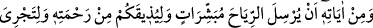
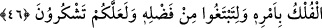

3- Hak ehlini kim inkâr ederse, inkârının cezâsı kendisinedir. Bu cezâ ise îmânın
hakîkatlerinden mahrumiyettir. Allah Teâlâ inkâr edenleri sevmez. Çünkü eğer onları
sevseydi, onlara sıdk ve taleb ihsân eder, yardımsız bırakılmak sûretiyle inkâr ve
nankörlüğe düşmezlerdi.
Beynini, zihnini dostu inkârdan arındır
Ki yârin gül bahçesinden reyhan gibi olan kokuyu alsın
Bir hadîste “Asıl hatâ etmez.” buyrulmuştur. Bu hadîsin yorumu şöyledir: İkrâr ehli
lütuf sıfatlarına, inkâr ehli ise kahır sıfatlarına râcidir. Çünkü birincilerin yaradılışta
aslı birinci sıfatlardandır. İkincilerin ise ikinci sıfatlardandır.
Allah bana şarabı, sana sirkeyi verdi.
Madem ki kısmet böyle, benim seninle kavgamın anlamı ne?
Allah’tan aşk, iştiyak ve âşıkların yoluna sülûk etmeyi niyaz ederiz. Her hâlükârda
yoldan çıkmaktan ve dalâlete düşmekten O’na sığınırız.
46. Size rahmetinden tattırsın, emriyle gemiler yüzsün, fazlından (nasibinizi)
arayasınız ve şükredesiniz diye (hayat ve bereket) müjdecileri olarak rüzgârları
göndermesi de Allâh’ın (varlık ve kudretinin) delillerindendir.
“Size rahmetinden tattırsın,” ki bu rüzgara bağlı faydalardandır “emriyle gemiler”
denizde rüzgârların sevki ile “yüzsün.” Gemiler rüzgârlarla seyreder, rüzgârlar da
Allâh’ın emriyle eser. Dolayısıyla gemiler hakikatte Allâh’ın emriyle seyreder. el-
Esrâru’l-Muhammediyye’de der ki: “Geminin durması ve seyretmesi konusunda
rüzgâra dayanıp güvenme. Çünkü bu, tevhid-i ef’âlde şirktir ve işlerin hakikatlerini
bilmemektir. Kime âlemin durumu olduğu gibi/bulunduğu hal üzere keşfolunursa,
rüzgârın kendi kendine hareket etmediğini, bilakis onun bir hareket ettireni olduğunu
bilir. Sonunda kendisinin muharriki olmayan, kendisi de hareket etmeyen, bilakis bundan
ve benzer şeylerden münezzeh olan ilk muharrike ulaşır. O noksanlardan münezzeh ve
yücedir.
“Fazlından” yâni deniz ticaretinden “(nasibinizi) arayasınız.” Burada ticaret için
denize açılmaya cevaz vardır. Denize açılmanın şartları (Bursevî’nin tertibine göre
olan yazmada) ikinci cildin sonunda geçmişti.